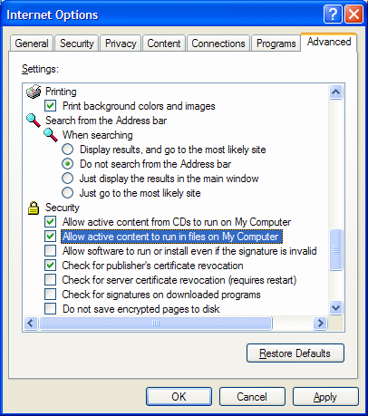

JavaScript is currently disabled.
The SmartClient web presentation layer requires JavaScript to be enabled in your web browser.
The most likely reason for this message is that you have opened this page directly from your
file system in Internet Explorer on Windows XP SP2. If this is the case, you may either:
- Start the embedded application server (see the
SDK release notes for details), then open this page from
http://localhost:8080; or
- Enable JavaScript in local files. Select the Tools > Internet Options... menu, click the
Advanced tab (see image below), scroll down, and check Allow active content to run in
files on My Computer. If you have opened this page directly from a CD, also check "Allow active
content from CDs...". Then simply refresh this page.

If you are seeing this message in a different browser or configuration, please check your browser
preferences and security settings to ensure that JavaScript is enabled. If you need assistance,
email
support@smartclient.com.